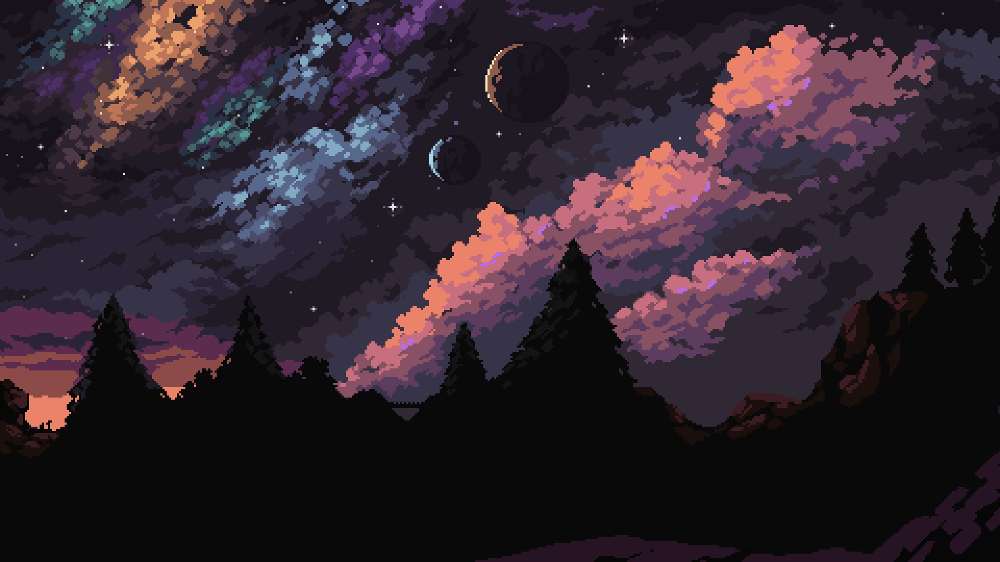
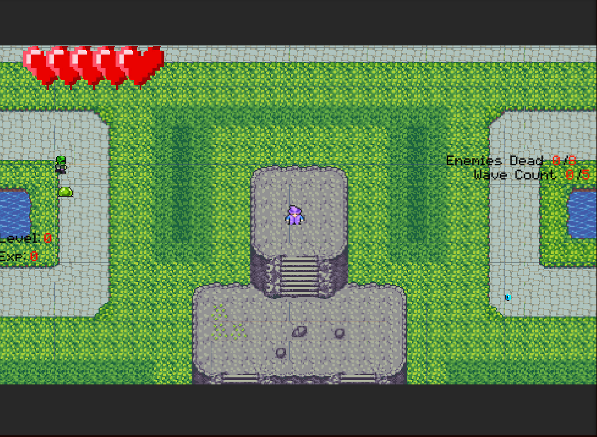

Wizards Day Project
Unity - C#
List of Contributions:

Generalist Programmer
I lead my team and programmed the game.
- Wave Spawner Development: Wave Management: I designed and implemented a robust wave spawner system that dynamically generated enemy waves. The system included configurable parameters for wave difficulty, timing, and enemy types. Performance Optimization: I optimized the wave spawner to handle increasing difficulty levels and enemy counts without compromising game performance.
- Sound Effects and Music: I integrated sound effects and background music into the game to create an immersive audio environment. This involved working with various audio assets, implementing audio triggers, and balancing sound levels to enhance gameplay. Audio Controls: I developed an in-game audio settings menu, allowing players to adjust volume levels for sound effects and music, providing a customizable audio experience.
- Leveling Up System: Experience Points (XP) Drop: I implemented a leveling up system where enemies drop experience points upon being killed. Player Boosts: Every five levels, players receive boosts such as the ability to sprint, increased damage, and more health, enhancing their capabilities and keeping gameplay engaging.

Project Manager
- Feature Planning and Management: Identifying Features: I initiated the project by brainstorming and identifying the essential features that needed to be included in the game. This involved understanding the game's requirements and setting clear, achievable goals. Feature Breakdown: I broke down these features into manageable tasks, assigning specific tasks to team members based on their strengths and expertise.
- Task Assignment and Monitoring: Delegating Tasks: I effectively delegated tasks to team members, ensuring that each individual knew their responsibilities and deadlines. Progress Tracking: I consistently checked in with team members to monitor their progress, addressing any roadblocks they encountered and providing support as needed. Task Prioritization: I prioritized tasks to ensure that critical components of the game were developed first, maintaining a clear focus on the project's timeline and milestones.
- Communication and Coordination: Regular Meetings: I conducted regular team meetings to discuss progress, share updates, and realign on project goals. These meetings were essential for maintaining team cohesion and motivation. Status Updates: I provided frequent status updates to the team, highlighting completed tasks and upcoming priorities. This helped maintain transparency and ensured everyone was on the same page.